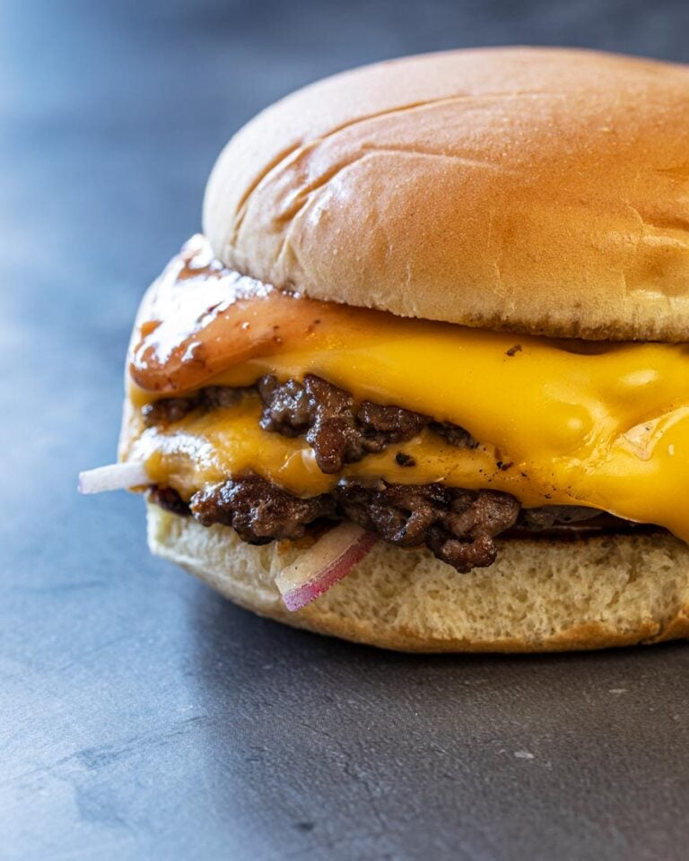

Smashburger

Description
This recipe is how to make a delicious smashburger quick and easy.
Ingredients
- 1/4lb ground beef
- 3 slices of bacon
- 1 slice of cheese
- stick of butter
- burger buns
- seasoning
Steps
- Set buns in the toaster and bacon in the microwave
- turn heat to medium and lightly butter the pan
- start the microwave (around 4 minutes) and toaster
- take ground beef and split into 2 even balls
- turn heat to high and wait, then put a ball on the pan and smash down with a spatula, repeat for other one
- wait around 4 minutes, then flip patties and season
- wait another 4 minutes, then add half a slice of cheese to each patty
- prepare bacon and bun, move patties and done
back